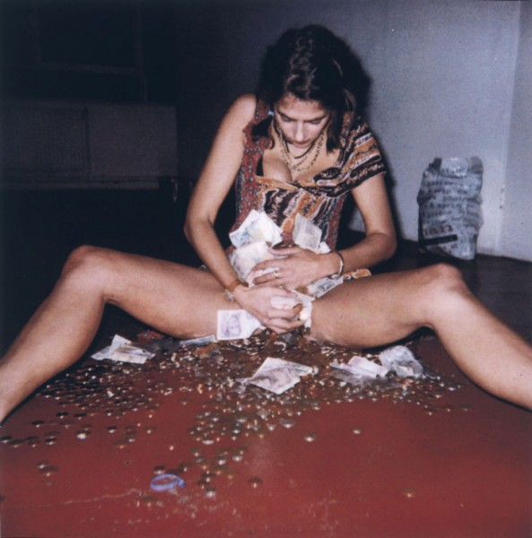
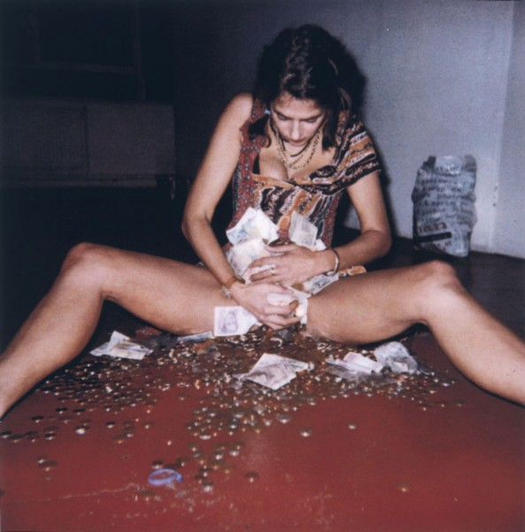
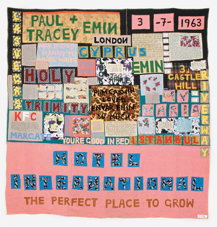

-
How Tracey Emin Conquered the World
by Lauren DiGiulio September 28, 2011
 
In her photographic self-portrait entitled I’ve Got It All (2000), Tracey Emin faces the camera with head bowed and legs splayed. Wearing a Vivienne Westwood dress and her signature gold necklace, she cradles an armload of banknotes and coins at her crotch. It’s a delightfully ambiguous gesture. Is she suggesting an appropriation of an exterior material economy into a physical interior in attempting to incorporate the money into her own body, or has she become a human slot machine, transformed into a progenitor of pure liquid capital? At the time I’ve Got It All was created, Emin was already a well-known media figure enjoying both commercial and social success, having stirred controversy by exhibiting her work My Bed in the Turner Prize nominee exhibition the previous year. Here, in her self-portrait, she celebrates the phenomenon of her success with tinges of both emotional poignancy and sarcasm. The presentation asks us to join her in celebrating such prosperity, while the tone of her depiction invites us to question both its nature and its value.
It is around these questions that the exhibition Tracey Emin: Love Is What You Want, which ended August 29th at the Hayward Gallery in London’s Southbank Centre, performs its discursive seduction. At its best, the show functions as a catalyst, propelling us into the dynamic and highly emotional world of the artist herself. Emin’s work, often frantic, sexual, abject, and contemplative — explores themes of love, grief, isolation, and longing, examined through the medium of an intimate biographical narrative. Emin is deeply, even chiefly, concerned with intimacy, both our reactions to it, and our attempts to move beyond it. Tracing her personalized engagement makes for a mesmerizing show, equal parts fascination and terror.
The show represents the most important retrospective of the artist to date, and its content gazes simultaneously backwards and forwards. This being a mid-career occasion, the past work is thoroughly surveyed, and is here arranged according to media, which also falls into a loose chronological correspondence. The most recent work fills a large second-floor room, while a series of sculptures created specifically for the exhibition occupy the rooftop courtyard. Natural light spills onto the upper floors of the gallery, where the more recent work offers a welcome sense of calm after the emotional hurricane housed on the windowless ground floors.
We are greeted by a selection of Emin’s eponymous quilt pieces. Created using fragments of clothing from her own childhood or from the closets of family and friends, these hand-appliquéd blankets spell out textual messages that reference moments of biography or serve as expressive slogans. The first of these pieces, Hotel International, completed in 1993, states birthday details, names of family members, and places Emin lived during her childhood. Longer textual narratives are also included. Handwritten in tiny script lettering, these pieces invite the viewer to step closer to engage in detailed reading. The appliquéd words “KFC Margate”, a reference to the location of a flat Emin shared for several years with her mother and grandmother, are supplemented by a paragraph of hand-written text detailing personal memories from this period of her life.The various colors, sizes, and styles of lettering, reminiscent of banners used for political or religious purposes, further pays homage to both the tradition of second-wave feminist art, and, by extension, the traditional craft-based practice from which such work took its form and inspiration.
Sometimes the work crackles with mischievous wit, as we encounter in her neon sculpture Is Anal Sex Legal? (1998). Rendered in vivid purple, the sculpture reads simply “Is anal sex legal? Is legal sex anal?” Elsewhere, she performs with a more uplifting flair. In the 1995 video Why I never became a dancer, the artist narrates a story from her teenage years about her use of sexual behavior as a means of escape from the drudgery of her hometown. Scenes of Margate are depicted as visual points of reference underscoring Emin’s confession. After we hear of a dance contest in which she is forced offstage by a heckling group of local boys, she lists them each by name, telling them “This one’s for you”, before we see her dancing to Sylvester’s “You Make Me Feel (Mighty Real)” with an exuberant smile splashed across her face. Through reenacting the performance for which she was ridiculed, the artist revisits a painful memory while whimsically rehearsing an alternate variation of its outcome.
Many pieces included in the show, however, explore darker themes. A 2008 painting entitled Black Cat takes inspiration from Poe’s 1843 short story of the same title, examining guilt and madness. Rendered with dynamic strokes that literally drip from the canvas, the painting depicts a large, partially nude figure positioned in the center of the composition. The figure’s face is obscured in a swath of black, while its hand masturbates above a deep-red pool of blood positioned at its feet.
Emin’s most recent work comprises the final segment of the exhibition. Color has here been drained from the objects, and biographical narrative further stripped away, allowing material and emotional content to move into the foreground. Salem (2005), constructed as a large timber sculpture arranged around a vertically positioned white neon tube light, evokes images of witch-burning, and the surrounding fear and sexuality. It Always Hurts (2005) finds Emin revisiting her earlier blanket forms, but with more explicit visual imagery. Created with embroidery and appliqué in delicate shades of cream, beige, and white, the piece depicts a central image of an embroidered nude bending provocatively away from the viewer under the headline, “Be with who ever it always hurts.” Upon moving closer, we discover tiny images of truncated torsos, a recurring image found throughout the scope of her work, nestled between small handwritten notes that read as whispers. “Nothing else but me,” one declares. It is a message as direct in its delivery as it is devoid of self-pity. By asking us to temporarily suspend our analytic impulses, she encourages a wider array of responses, and her work becomes both playful and haunting.
A broader inquiry into British art is at stake in the staging of this particular mid-career retrospective, one readily illustrated in its choice of hero image: a 2011 photograph of Emin running along a cobblestone street and away from the camera, her nude legs and torso exposed beneath the flapping union jack she waves behind her. As a headliner of the Southbank Centre’s four-month Festival of Britain, the 60th anniversary celebration of an annual festival that showcases “British culture and creativity”, the show seems to further position its content as representative of contemporary British culture.
Emin, of course, emerged as an affiliate of the Young British Artists, who were recognized as much for their unconventional practices as for their impassioned energy. Beginning in the late 1980s, they had started exhibiting in abandoned urban spaces across the southern and eastern areas of London. Emin exhibited her first solo show in 1993 at Jay Jopling’s White Cube Gallery. Meanwhile, as the world economy began to prosper, London began to experience a period of urban renewal. Cultural innovation began to parallel such development, and many see the story of the YBAs — the narrative of humble beginnings followed by a swift rise to success and subsequent periods of debauched excess, as an apt metaphor for the prosperity of the nineties themselves. As Patricia Ellis observes,
It’s nice to think of the YBAs as the art world answer to the dot-com whiz-kids- geniuses in their fields with insurmountable imagination and vision, nonconformists, reinventing the terms on which business is done.1
If the art of the YBAs served in the 1990s as the British cultural echo to the dot-com boom, as Ellis suggests, then we might expect Emin’s current work to have been tempered as much by a more sober economic climate as by the maturity that comes with experience. However, although the work has distilled into a distinctly middle-aged minimalist expressionism, we find its content more spirited than ever. By inviting us to step uncomfortably close, Emin continues to question the nature of intimacy, and to explore the limits of the boundary between self and other.
Although the effects of her work still resonate strongly, the shocked reaction that accompanied its debut has subsided. If the demographic when I visited is any indication, the British public now deems Emin appropriate for children under ten. Perhaps it was lingering American puritanism, as it seemed I was the only one uncomfortable when several children under the age of five were left to wander alone through What it feels like (1996), a video installation in which Emin recounts her first abortion in vivid detail. But perhaps this means her work has succeeded?
The exhibition includes an early work, Emin’s Army (1993-1997), which consists of a group of miniature cardboard tanks placed strategically across a world map that lies horizontally on a table. Flags bearing the hand-written names of Emin’s friends are planted triumphantly around the world. “S. Lucas” conquers New Zealand, while “G. Hume” takes upstate New York and “D. Hirst” dominates Hong Kong. The setup, cheerfully reminiscent of a board game, pursues a focused agenda beneath its whimsical tone. Emin asserts her community’s authority over an established market system with exuberance, her victory no less delightful for having long since been assured.
- Ellis, Patricia. 100: The Work That Changed British Art, ed. Charles Saatchi (London: Jonathan Cape and The Saatchi Gallery, 2003), 201. [↩]